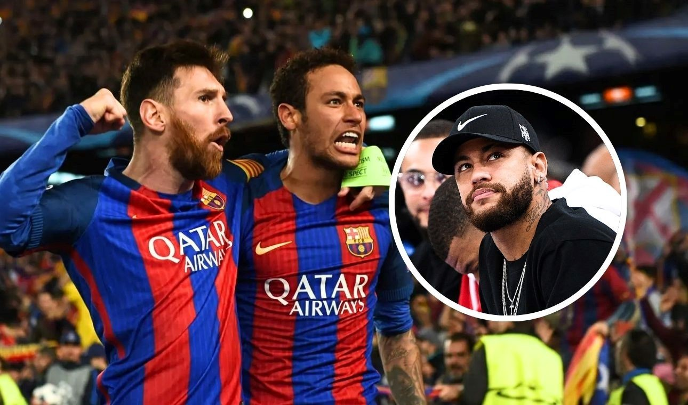

Neymar, Leo y una sociedad histórica en Barcelona.
Neymar y una charla íntima con Messi antes de mudarse al PSG
La carrera de Neymar ha estado marcada por grandes momentos, decisiones controvertidas y una relación única con Lionel Messi. Desde sus días en el Barcelona, donde formó parte de una de las delanteras más letales junto a Leo y Luis Suárez, hasta su millonario traspaso al París Saint Germain, el brasileño ha sido protagonista tanto dentro como fuera de la cancha. Ahora, en una entrevista con Romario TV, Ney se sinceró sobre sus motivaciones, los desafíos de su paso por Europa y una particular charla con el astro argentino antes de mudarse a Francia.
Neymar reveló la charla que tuvo con Messi durante su última semana en Cataluña, antes de concretar su salida al PSG. Según relató, el 10 intentó persuadirlo de quedarse. “Messi me dijo: ‘¿Por qué te vas? Yo voy a hacer que seas el mejor del mundo’. Fue muy sincero conmigo. Pero yo ya tenía la decisión tomada. Le respondí que no era por eso, que mi salida era algo personal”, explicó Neymar, quien mencionó que factores como el atractivo económico y el deseo de reunirse con sus compatriotas Thiago Silva, Dani Alves y Marquinhos influyeron en su elección. Ver Mas...
Mano Menezes, DT de la Sub 20 de Brasil.
El gobierno de Lula le envió una carta a la Conmebol para darles seguridad a la delegación.
El gobierno de Brasil le pidió "garantías" de seguridad a la Conmebol para la delegación que participará en el Campeonato Sudamericano Sub 20, desde el 23 de enero en Venezuela. Esto surge poco después de un reclamo de la Ministro de Seguridad de Argentina, Patricia Bullrich, para que se cambie la sede del torneo o que el equipo de Diego Placente no se presente a jugar.
"El Gobierno Federal, a través del ministerio de Deporte, formalizó su preocupación con la Conmebol y solicitó garantías relacionadas con la seguridad de los atletas, equipos técnicos, profesionales que cubren el evento y aficionados brasileños durante el campeonato", indicó el organismo en una nota.
El despacho de la administración de Luiz Inácio Lula da Silva envió el miércoles una carta al ente rector del fútbol sudamericano en la que insta a los organizadores del torneo a asegurar "la protección y el bienestar" de los ciudadanos brasileños.Ver Mas...
Nicolás Cavigliasso y su esposa, Valentina Pertegarini sosteniendo la medalla de campeon
Tras completar las 12 etapas en Arabia Saudita con el mejor tiempo.
El piloto cordobés Nicolás Cavigliasso y su esposa, Valentina Pertegarini, se consagraron campeones del Rally Dakar 2025 en la categoría Challenger. La pareja selló su triunfo en Arabia Saudita tras completar la última etapa, manteniendo la ventaja que habían construido a lo largo de la competencia.
Detrás del matrimonio argentino, en segundo lugar, se ubicó el portugués Gonçalo Guerreiro, mientras que el español Pau Navarro quedó tercero.
Los cordobeses habían llegado a la competencia como candidatos al título, tras lograr el subcampeonato mundial de pilotos y título mundial de navegantes en 2024. Leer mas..